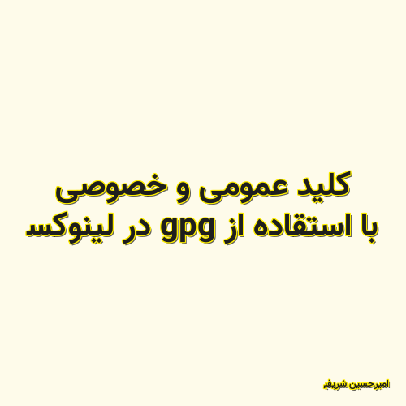

✖
محتوای غیر رسمی
اجازه رسمی پیوند به این پست توسط ساریاب دریافت نشده است؛ و یا نویسنده عضو رسمی بلاگر های آزاد ساریاب نیست.

کلید عمومی و خصوصی با استقاده از gpg در لینوکس
در این ویدیو با استفاده از gpg ابتدا یک کلید عمومی و خصوصی با RSA ساخته می شود. سپس یک متن را توسط کلید عمومی رمز کرده و با استفاده از کلید خصوصی آن را از رمز در می آوریم.
امیرحسین شریفی 2021-05-11 19:08:00 مطالعه پست گزارش خرابی لینک / محتوای مجرمانه / تغییر محتویات لینک